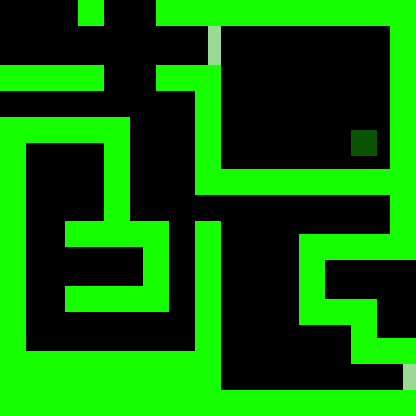

Dia 217 - Diário de bordo
Finalmente, consegui projetar um mine mapa do local que chamo de lar, se bem que parece mais um
presídio onde eu sou obrigado a ficar, mas agora eu não vou mais ficar meses perdido do meu amiguinho de longa data,
acho que ficar muito tempo no nível
X 0
T his data is currupted
This data is currupted
This data is currupted
This data is currupted
T his data is currupted
This data is currupted
This data is currupted
This data is currupted
-Frank

Nome: Mapa
Autor: Franklin Murray